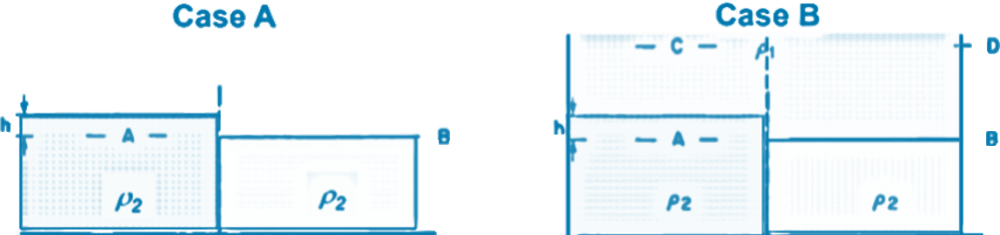
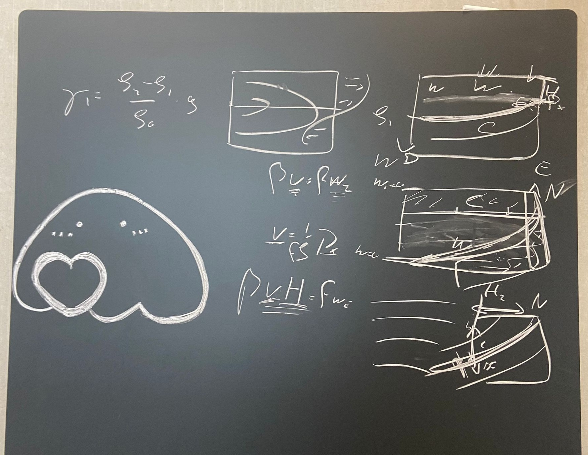
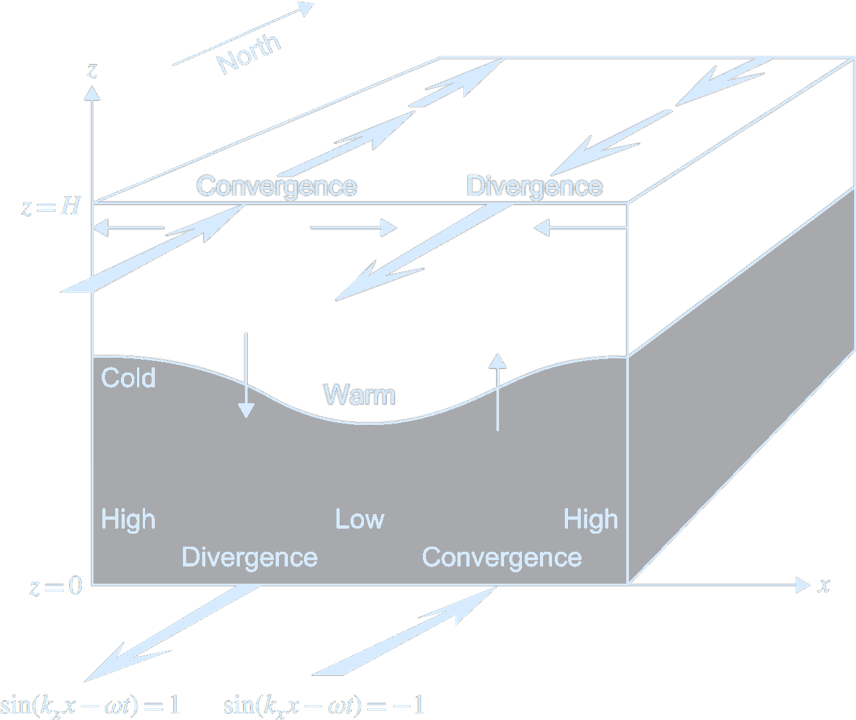

Lecture 6 – Quasi-Geostrophy
Geostrophy
Large-scale flow in the ocean and the atmosphere is characterized by an approximate balance in the vertical direction between the pressure gradient and gravity (hydrostatic balance), and in the horizontal direction between the pressure gradient and the Coriolis force (geostrophic balance). The Coriolis force in the momentum equations leads to the possibility of new balances, in particular, a balance between the Coriolis force and the pressure gradient force (geostrophic balance). There is an acceleration from high to low pressure, as would happen without any influence of rotation.acceleration = pressure gradient force $$ \frac{\partial u}{\partial t} = -\frac{1}{\rho_0} \frac{\partial p}{\partial x} $$ Over time, as the velocity $u$ increases, the Coriolis force becomes important. If the pressure gradient persists over a time longer than the inertial period, $T = \frac{2\pi}{f}$, the water parcel will be deflected (to the right in the Northern Hemisphere), until the Coriolis force exactly balances the pressure gradient force. The parcel will then experience no further accelerations (at least in our rotating reference frame). Remember that: $$ f = 2\Omega \sin \theta \quad \text{where} \quad \Omega = \frac{2\pi}{24 \text{ hours}} = 7.292 \times 10^{-5} \, \text{s}^{-1} $$ and $\theta$ is latitude. Then we have Geostrophy: $$ \boxed{fu = -\frac{1}{\rho_0} \frac{\partial p}{\partial y}} \quad \left( F_c = -F_p \right) $$ Geostrophy also holds for the other velocity component $v$: $$ \boxed{fv = \frac{1}{\rho_0} \frac{\partial p}{\partial x}} $$ The signs for the component equations $fu = -\frac{1}{\rho_0} \frac{\partial p}{\partial y}$ and $fv = \frac{1}{\rho_0} \frac{\partial p}{\partial x}$ are because of the high pressure is on the right when looking downstream in the northern hemisphere (and on the left in the southern hemisphere, where $f$ is negative).
Vertical Structure: Baroclinic Quasi-Geostrophic Models
The simultaneous explanation of the vertical and horizontal structures of the density field and renders the physics very difficult. It has been possible to effect great simplifications in the theoretical treatment of the problem by employing quasi-geostrophic models of the stratified, wind-driven ocean circulation. Since the vertical structure of the horizontal velocity field is related to the horizontal density gradient, we can with these models concentrate first on describing the structure of the horizontally varying part of the density field accepting, as given, the vertical density gradient. This considerably simplifies the problem and renders it nearly linear, although with important and essential nonlinear aspects. The density field is written: $$ \rho_{\text{total}} = \rho_s(z) + \rho(x, y, z, t) $$ where, $\rho(x, y, z, t)$ is the density variation around the laterally averaged density field, $\rho_s(z)$, which is a function only of depth. A principal feature and requirement of quasi-geostrophic theory is that: $$ \frac{\partial \rho}{\partial z} \ll \frac{\partial \rho_s}{\partial z} $$ (Schematic presentation of an \(N\)- layer quasi-geostrophic model. The density is constant in each layer. The top of the \(n\)th layer is at $z = z_n$ and the thickness of each layer is $h_n$. Credit: Pedlosky 1996. Ocean Circulation Theory.)
Reduced Gravity
 Pressure difference between A and B (Case A): $$ \Delta P = \underbrace{\rho_2}_{\text{ambient density}} \cdot g \cdot h $$ Pressure difference between A and B (Case B): $$ \Delta P = \underbrace{(\rho_2 - \rho_1)}_{\text{density difference (buoyancy)}} \cdot g \cdot h $$ The adjustment process in Case B is exactly the same as in Case A, except the gravitational acceleration is reduced to a value $g'$, where: $$ g' = g \cdot \frac{(\rho_2 - \rho_1)}{\rho_2} $$ A simple perturbation on the mean stratification
Underneath the mixed layer, the flow is adiabatic and for every layer $((v_n)_z = 0!)$ we have:- I $u_t + \vec{u} \cdot \nabla u - fv = -\frac{1}{\rho_0} p_x$
- II $v_t + \vec{u} \cdot \nabla v + fu = -\frac{1}{\rho_0} p_y$
- III $0 = -\frac{1}{\rho_0} p_z + g$
- IV $u_x + v_y + w_z = 0$
- IVa $\Longrightarrow (u_g)_x + (v_g)_y + (w_g)_z = 0$
- Ia: $$ (u_g)_t + \vec{u}_g \cdot \nabla u_g - \beta y v_g - f_0 v_a = 0 $$
(Schematic of a layered ocean model in quasi-geostrophic theory. Each layer $n$ lies between interfaces at $z = z_n(\phi, \theta)$ (top) and $z = z_{n+1}(\phi, \theta)$ (bottom), where $\phi$ is latitude and $\theta$ is longitude. Each layer has constant density and depth-independent horizontal velocity. Vertical mass exchange across layers is allowed via the cross-isopycnal flux $w^*$ (per unit horizontal area).
A control volume is defined for layer $n$, with projection along the $x$-axis. Mass conservation requires that net volume flux into this volume changes the layer thickness. Pressure gradient forces in the $x$-direction, shown in the $x$-$z$ plane, drive the horizontal flow and balance geostrophically in the quasi-geostrophic approximation.
Credit: Pedlosky 1996. Ocean Circulation Theory.)
Taylor approximation of
$$
\frac{1}{1 + \delta} \approx 1 - \delta
$$
$$
\Rightarrow \frac{1}{h_n} = \frac{1}{H_n} \left(1 - \frac{\delta h_n}{H_n} \right)
$$
$$
\frac{d\zeta_n}{dt} + \beta v_n = \frac{f_0}{H_n} \frac{d (\delta h_n)}{dt}
$$
$$
\frac{d}{dt} \left( \zeta + \beta y_n - \frac{f_0}{H_n} \delta h_n \right) = 0
$$
$$
\frac{d}{dt} q = 0; \quad \text{q is the quasi-geostrophic potential vorticity}
$$
QGPV is conserved!
Now we only have to connect layer thickness to velocities or streamfunctions.
The general case is tricky, but for the 2 layer case we know:
$$
h_1 = z_1 - z_2 \quad \text{and} \quad h_2 = z_3 - z_2,
$$
with
$$
\frac{d}{dt} z_1 = w_E \quad \text{and} \quad \frac{d}{dt} z_3 = w_B = 0,
$$
so only need to figure out
\[\boxed{
\frac{d}{dt} z_2}!
\]
Now we only need to connect layer thickness to velocities and Psi!
$$
f_0 v = \frac{1}{\rho_0} p_x \quad \Longrightarrow \quad v_2 = \frac{g}{f_0 \rho_0} \rho_x
$$
Discretize it:
$$
\frac{v_2 - v_1}{\Delta z_2} = \frac{g}{f_0 \rho_0} \frac{\rho_2 - \rho_1}{\Delta x}
$$
For simplicity’s sake, assume $v_2 = 0$. Then there is no pressure gradient in the second layer, and the pressure gradient induced by the surface elevation is balanced by the sloping isopycnal. It also means:
$$
\Longrightarrow \quad v_1 = \frac{-g}{f_0 \rho_0} \Delta \rho \frac{\Delta z_2}{\Delta x}
$$
(the velocity is proportional to the isopycnal slope!)
Define reduced gravity:
$$
\gamma_1 = \frac{\rho_2 - \rho_1}{\rho_0} g
$$
so that for the more general case of a non-zero $v_2$:
$$
v_2 - v_1 = \frac{\gamma_1}{f_0} \frac{\Delta z_2}{\Delta x} = \frac{\Delta \psi_2 - \Delta \psi_1}{\Delta x}
$$
Or, after cancelling $\Delta x$ and shrinking $\Delta$:
\[\boxed{
\frac{d}{dt} z_2 = \frac{f_0}{\gamma_1} (d\Psi_2 - d\Psi_1)}!
\]
so that for our 2-layer ocean:
$$
\frac{d}{dt}(\nabla^2 \Psi_1 + \beta y - \frac{f_0^2}{H_1 \gamma_1} (\Psi_2 - \Psi_1)) = \frac{f_0}{H_1} w_E
$$
$$
\frac{d}{dt}(\nabla^2 \Psi_2 + \beta y - \frac{f_0^2}{H_2 \gamma_1} ( \Psi_1 - \Psi_2)) = 0
$$

(Structure of a baroclinic planetary wave with
$f_0 > 0, \, k_x > 0, \, k_y = 0,$ and $k_z = \pi / H$,
which yield $\omega < 0$ and a wave structure with a single reversal in the vertical. Credit: Cushman-Roisin & Beckers 2011. Introduction to Geophysical Fluid Dynamics - Physical and Numerical Aspects.)
Even simpler, a linear version
(remember: $ds/dt = \partial s / \partial t + u \, \partial s / \partial x + v \, \partial s / \partial y$)When n = 2 $$ \frac{\partial}{\partial t} \left( \nabla^2 \Psi_1 - \frac{f_0^2}{H_1 \gamma_1} (\Psi_2 - \Psi_1) \right) + \beta \frac{\partial \Psi_1}{\partial x} = \frac{f_0}{H_1} w_E $$ $$ \frac{\partial}{\partial t} \left( \nabla^2 \Psi_2 - \frac{f_0^2}{H_2 \gamma_1} (\Psi_1 - \Psi_2) \right) + \beta \frac{\partial \Psi_2}{\partial x} = 0 $$ Steady State $\partial / \partial t = 0$ $$ \beta \frac{\partial \Psi_1}{\partial x} = \frac{f_0}{H_1} w_E $$ $$ \beta \frac{\partial \Psi_2}{\partial x} = 0 $$ All the Sverdrup flow is trapped in the upper layer! A layer that is not connected to the surface does not move in a linear model. A nonlinear steady solution: $$ \frac{d}{dt} \left( \nabla^2 \Psi_1 + \beta y - \frac{f_0^2}{H_1 \gamma_1} (\Psi_2 - \Psi_1) \right) = \frac{f_0}{H_1} w_E $$ $$ \frac{d}{dt} \left( \nabla^2 \Psi_2 + \beta y - \frac{f_0^2}{H_2 \gamma_1} (\Psi_1 - \Psi_2) \right) = 0 $$ Simplify through scaling: $$O(\nabla^2 \Psi_1 / \frac{f_0^2}{H_1 \gamma_1} \Psi_1) = H_1 \gamma_1 / f^2 L^2$$ Thermal wind: $$f v_z = \frac{g}{\rho_0} \rho_x \quad \Rightarrow \quad O(v) = \frac{gH}{f_0} \frac{\Delta \rho}{L}$$ $$ \frac{H_1 \gamma_1}{f^2 L^2} = \frac{\Delta \rho H g}{\rho_0 f^2 L^2} = \frac{v}{fL} \quad \boxed{\text{the Rossby number!}} $$ Thus $$ \frac{d}{dt} \left( \beta y - \frac{f_0^2}{H_1 \gamma_1} (\Psi_2 - \Psi_1) \right) = \frac{f_0}{H_1} w_E $$ $$ \frac{d}{dt} \left( \beta y - \frac{f_0^2}{H_2 \gamma_1} (\Psi_1 - \Psi_2) \right) = 0 $$ For steady state, and since $J(\Psi_1, \Psi_1) = 0$: $$ \frac{f_0^2}{H_1 \gamma_1} J(\Psi_1, \Psi_2) + \beta \frac{\partial \Psi_1}{\partial x} = \frac{f_0}{H_1} w_E $$ $$ \frac{f_0^2}{H_2 \gamma_1} J(\Psi_2, \Psi_1) + \beta \frac{\partial \Psi_2}{\partial x} = 0 $$ For illustrate the main dynamics at work, let’s assume $v_2 = 0$, then $$ u_2 \frac{f_0^2}{H_2 \gamma_1} (\Psi_2 - \Psi_1))_x = \beta \frac{\delta \Psi_2}{\delta x} $$ Southward movement can be balanced by advection of thinner layers! 
(Schematic streamlines in layer 2 as they emanate from the outcrop line. Through the point $(\phi', \theta_2)$ on the outcrop line a geostrophic streamline passes to the point $(\phi, \theta)$ along a line of constant $z_3$ or $h$. The streamline, which north of the outcrop line is contiguous with the eastern wall, must leave the wall at the outcrop line and trend westward exposing a zone near the eastern wall that is not reached by any streamline originating from the outcrop line.
Credit: Pedlosky 1996. Ocean Circulation Theory.)
The following figure shows a solution for this 2 layer system for an idealized sinusoidal wind stress profile. Mostly the 2nd layer is indeed at rest, but in the west the flow, and the advection of layer thickness is strong enough to balance the advection of the planetary vorticity gradient.

(Streamfunction in the 2.5-layer model with the assumption that the potential vorticity in layer 2 is homogenized within the pool of closed geostrophic contours. In the figure
$
\alpha = \frac{f_0 w_0}{\beta^2 L^2 \bar{H}} = 0.3
$
The layer depths and the density jumps at the two active interfaces are taken to be equal.
(a) $\psi_1$. Note the kink in the upper layer streamlines at the boundary of the pool (plus signs).
(b) $\psi_2$. The motion is a swirling recirculation limited to the pool. An implied return flow through the western boundary current must take place in both layers.
Credit: Pedlosky 1996. Ocean Circulation Theory.)
Quasi-Geostrophic Single-Layer Models
import numpy as np
import matplotlib.pyplot as plt
from numpy.fft import fft2, ifft2
import h5py
import os
from time import time
import matplotlib.animation as animation
from tqdm import tqdm
style_color = '#d6ebff'
plt.rcParams.update({
'text.color': style_color,
'axes.labelcolor': style_color,
'xtick.color': style_color,
'ytick.color': style_color,
'axes.edgecolor': style_color,
'axes.facecolor': 'none',
'savefig.transparent': True,
'figure.facecolor': 'none',
})
# Parameters
n = 128
L = 2 * np.pi
beta = 10.0
mu = 0.01
dt = 0.05
nsteps = 8000
save_substeps = 10
forcing_wavenumber = 14.0 * 2 * np.pi / L
forcing_bandwidth = 1.5 * 2 * np.pi / L
epsilon = 0.001
filepath = "."
plotpath = "./plots_forcedbetaturb"
filename = os.path.join(filepath, "singlelayerqg_forcedbeta.h5")
# Grid setup
x = np.linspace(-L/2, L/2, n, endpoint=False)
y = np.linspace(-L/2, L/2, n, endpoint=False)
dx = L / n
dy = L / n
kx = np.fft.fftfreq(n, d=dx) * 2 * np.pi
ky = np.fft.fftfreq(n, d=dy) * 2 * np.pi
kx, ky = np.meshgrid(kx, ky, indexing='ij')
krsq = kx**2 + ky**2
krsq[0, 0] = 1.0
inv_krsq = 1.0 / krsq
krsq[0, 0] = 0.0
inv_krsq[0, 0] = 0.0
# Forcing spectrum
K = np.sqrt(krsq)
forcing_spectrum = np.exp(-((K - forcing_wavenumber) ** 2) / (2 * forcing_bandwidth ** 2))
forcing_spectrum[0, 0] = 0.0
epsilon0 = np.sum(forcing_spectrum * inv_krsq / 2) / (L * L)
forcing_spectrum *= epsilon / epsilon0
# Initialize fields
qh = np.zeros((n, n), dtype=complex)
psi_hat = np.zeros_like(qh)
u = np.zeros_like(qh, dtype=float)
v = np.zeros_like(qh, dtype=float)
t = 0.0
# Output setup
if os.path.exists(filename):
os.remove(filename)
if not os.path.exists(plotpath):
os.mkdir(plotpath)
hf = h5py.File(filename, 'w')
snapshots = hf.create_group("snapshots")
diagnostics = hf.create_group("diagnostics")
snapshots.create_dataset("t", shape=(0,), maxshape=(None,), chunks=True, dtype='f')
snapshots.create_dataset("qh", shape=(0, n, n), maxshape=(None, n, n), chunks=True, dtype='complex128')
diagnostics.create_dataset("energy", shape=(0,), maxshape=(None,), chunks=True, dtype='f')
diagnostics.create_dataset("enstrophy", shape=(0,), maxshape=(None,), chunks=True, dtype='f')
# Diagnostics
def compute_energy(qh, inv_krsq):
return 0.5 * np.sum(np.abs(qh)**2 * inv_krsq) * dx * dy
def compute_enstrophy(qh):
return 0.5 * np.sum(np.abs(qh)**2) * dx * dy
# Forcing function
def calcF():
noise = np.random.normal(size=(n, n)) + 1j * np.random.normal(size=(n, n))
noise /= np.sqrt(2)
return noise * np.sqrt(forcing_spectrum) / np.sqrt(dt)
# Time-stepping
energy = []
enstrophy = []
times = []
for step in tqdm(range(1, nsteps + 1), desc="Running simulation"):
Fh = calcF()
qh += dt * (-mu * qh + Fh)
psi_hat = -qh * inv_krsq
u_hat = 1j * ky * psi_hat
v_hat = -1j * kx * psi_hat
u = np.real(ifft2(u_hat))
v = np.real(ifft2(v_hat))
if step % save_substeps == 0:
t += dt * save_substeps
E = compute_energy(qh, inv_krsq)
Z = compute_enstrophy(qh)
energy.append(E)
enstrophy.append(Z)
times.append(t)
i = len(times) - 1
snapshots["t"].resize((i + 1,))
snapshots["qh"].resize((i + 1, n, n))
diagnostics["energy"].resize((i + 1,))
diagnostics["enstrophy"].resize((i + 1,))
snapshots["t"][i] = t
snapshots["qh"][i] = qh
diagnostics["energy"][i] = E
diagnostics["enstrophy"][i] = Z
hf.close()
with h5py.File(filename, 'r') as f:
t_vals = f["snapshots/t"][:]
qh_vals = f["snapshots/qh"][:]
E_vals = f["diagnostics/energy"][:]
Z_vals = f["diagnostics/enstrophy"][:]
qh_frame = qh_vals[-1]
psi_frame = -qh_frame * inv_krsq
q_real = np.real(ifft2(qh_frame))
psi_real = np.real(ifft2(psi_frame))
ubar = np.mean(np.real(ifft2(1j * ky * psi_frame)), axis=0)
qbar = np.mean(q_real, axis=0)
# Static summary plot
fig, axs = plt.subplots(2, 3, figsize=(15, 10))
qmin, qmax = q_real.min(), q_real.max()
pcm0 = axs[0, 0].imshow(q_real, extent=[-L/2, L/2, -L/2, L/2], origin='lower',
cmap='coolwarm', vmin=qmin, vmax=qmax, aspect='auto')
axs[0, 0].set_title("Vorticity $q$")
plt.colorbar(pcm0, ax=axs[0, 0])
pcm1 = axs[1, 0].imshow(psi_real, extent=[-L/2, L/2, -L/2, L/2], origin='lower',
cmap='Blues', aspect='auto')
axs[1, 0].set_title("Streamfunction $\\psi$")
plt.colorbar(pcm1, ax=axs[1, 0])
axs[0, 1].plot(qbar, y)
axs[0, 1].set_title("Zonal mean vorticity $\\bar{q}$")
axs[0, 1].set_xlabel("Amplitude")
axs[0, 1].set_ylabel("y")
axs[1, 1].plot(ubar, y)
axs[1, 1].set_title("Zonal mean zonal velocity $\\bar{u}$")
axs[1, 1].set_xlabel("Velocity")
axs[1, 1].set_ylabel("y")
axs[0, 2].plot(mu * np.array(t_vals), E_vals)
axs[0, 2].set_title("Energy vs. $\\mu t$")
axs[0, 2].set_xlabel("$\\mu t$")
axs[0, 2].set_ylabel("Energy")
axs[1, 2].plot(mu * np.array(t_vals), Z_vals, color='red')
axs[1, 2].set_title("Enstrophy vs. $\\mu t$")
axs[1, 2].set_xlabel("$\\mu t$")
axs[1, 2].set_ylabel("Enstrophy")
plt.tight_layout()
fig.patch.set_facecolor('none')
plt.savefig(os.path.join(plotpath, "snapshot_summary.png"), dpi=300)
for cbar in [pcm0.colorbar, pcm1.colorbar]:
cbar.ax.yaxis.set_tick_params(color=style_color)
plt.setp(cbar.ax.yaxis.get_ticklabels(), color=style_color)
cbar.outline.set_edgecolor(style_color)
plt.show()
# Animation of vorticity evolution
fig, ax = plt.subplots(figsize=(6, 5))
q_real0 = np.real(ifft2(qh_vals[0]))
im = ax.imshow(q_real0, extent=[-L/2, L/2, -L/2, L/2],
origin='lower', cmap='RdBu_r', vmin=qmin, vmax=qmax)
ax.set_title("Vorticity evolution", color=style_color)
cbar = plt.colorbar(im, ax=ax) # Add colorbar before animation starts
cbar.ax.yaxis.set_tick_params(color=style_color)
plt.setp(cbar.ax.yaxis.get_ticklabels(), color=style_color)
cbar.outline.set_edgecolor(style_color)
def update(i):
q_real = np.real(ifft2(qh_vals[i]))
im.set_array(q_real)
ax.set_title(f"Vorticity at $\\mu t$ = {mu * t_vals[i]:.2f}", color=style_color)
return [im]
fig.patch.set_facecolor('none')
ani = animation.FuncAnimation(fig, update, frames=len(t_vals), interval=150)
ani.save(os.path.join(plotpath, "vorticity_evolution.mp4"), fps=20, dpi=300)
plt.close()Quasi-Geostrophic Two-Layer Models
import numpy as np
import matplotlib.pyplot as plt
from scipy.fft import fft2, ifft2, fftfreq
from time import time
from tqdm import tqdm
import matplotlib.animation as animation
style_color = '#d6ebff'
plt.rcParams.update({
'text.color': style_color,
'axes.labelcolor': style_color,
'xtick.color': style_color,
'ytick.color': style_color,
'axes.edgecolor': style_color,
'axes.facecolor': '#001a33',
#'savefig.transparent': True,
'figure.facecolor': '#001a33',
})
# Parameters
n = 128
L = 2 * np.pi
dt = 2.5e-3
nsteps = 20000
nsubs = 50
mu = 5e-2
beta = 5
f0 = 1.0
H1, H2 = 0.2, 0.8
b1, b2 = -1.0, -1.2
U1, U2 = 1.0, 0.0
F1 = f0**2 / (H2 * (b1 - b2))
F2 = f0**2 / (H1 * (b1 - b2))
# Grid
x = np.linspace(-L/2, L/2, n, endpoint=False)
y = np.linspace(-L/2, L/2, n, endpoint=False)
dx = x[1] - x[0]
dy = y[1] - y[0]
X, Y = np.meshgrid(x, y, indexing='ij')
kx = fftfreq(n, d=dx/(2*np.pi))
ky = fftfreq(n, d=dy/(2*np.pi))
KX, KY = np.meshgrid(kx, ky, indexing='ij')
K2 = KX**2 + KY**2
K2[0, 0] = 1e-6 # avoid division by zero
# Spectral Filter
def spectral_filter(K2, cutoff_ratio=0.65):
k_cut = np.max(np.sqrt(K2)) * cutoff_ratio
filt = np.exp(-36 * (np.sqrt(K2) / k_cut)**20)
filt[K2 == 0] = 0.0
return filt
filter_mask = spectral_filter(K2)
# Initial Condition
np.random.seed(1234)
q1 = 1e-2 * np.random.randn(n, n)
q2 = 1e-2 * np.random.randn(n, n)
# Utility Functions
def q_to_psi(q1, q2):
q1h, q2h = fft2(q1), fft2(q2)
q1h *= filter_mask
q2h *= filter_mask
A = K2 + F1 + F2
psi1h = (q1h * (F2 + K2) + q2h * F1) / (K2 * A)
psi2h = (q2h * (F1 + K2) + q1h * F2) / (K2 * A)
return np.real(ifft2(psi1h)), np.real(ifft2(psi2h))
def jacobian(a, b):
ax, ay = np.gradient(a, dx, dy, edge_order=2)
bx, by = np.gradient(b, dx, dy, edge_order=2)
return ax * by - ay * bx
def laplacian(a):
return np.gradient(np.gradient(a, dx, axis=0), dx, axis=0) + \
np.gradient(np.gradient(a, dy, axis=1), dy, axis=1)
def rhs(q1, q2, psi1, psi2):
dq1 = -jacobian(psi1, q1) - (U1 * np.gradient(q1, dx, axis=0) + beta * np.gradient(psi1, dx, axis=0)) - mu * laplacian(psi1)
dq2 = -jacobian(psi2, q2) - (U2 * np.gradient(q2, dx, axis=0) + beta * np.gradient(psi2, dx, axis=0)) - mu * laplacian(psi2)
return dq1, dq2
def rk4_step(q1, q2):
psi1, psi2 = q_to_psi(q1, q2)
k1q1, k1q2 = rhs(q1, q2, psi1, psi2)
q1a = q1 + 0.5 * dt * k1q1
q2a = q2 + 0.5 * dt * k1q2
psi1, psi2 = q_to_psi(q1a, q2a)
k2q1, k2q2 = rhs(q1a, q2a, psi1, psi2)
q1b = q1 + 0.5 * dt * k2q1
q2b = q2 + 0.5 * dt * k2q2
psi1, psi2 = q_to_psi(q1b, q2b)
k3q1, k3q2 = rhs(q1b, q2b, psi1, psi2)
q1c = q1 + dt * k3q1
q2c = q2 + dt * k3q2
psi1, psi2 = q_to_psi(q1c, q2c)
k4q1, k4q2 = rhs(q1c, q2c, psi1, psi2)
q1_new = q1 + (dt / 6) * (k1q1 + 2 * k2q1 + 2 * k3q1 + k4q1)
q2_new = q2 + (dt / 6) * (k1q2 + 2 * k2q2 + 2 * k3q2 + k4q2)
q1_new = np.real(ifft2(fft2(q1_new) * filter_mask))
q2_new = np.real(ifft2(fft2(q2_new) * filter_mask))
return q1_new, q2_new
def compute_energy(psi1, psi2):
KE1 = 0.5 * H1 * np.mean(np.square(np.gradient(psi1, dx, axis=0)) + np.square(np.gradient(psi1, dy, axis=1)))
KE2 = 0.5 * H2 * np.mean(np.square(np.gradient(psi2, dx, axis=0)) + np.square(np.gradient(psi2, dy, axis=1)))
PE = 0.5 * f0**2 * (H1 * H2) / (H1 + H2) * np.mean((psi1 - psi2) ** 2)
return KE1, KE2, PE
# Simulation Loop
KE1_list, KE2_list, PE_list, times = [], [], [], []
q1_vals, q2_vals, psi1_vals, psi2_vals, t_vals = [], [], [], [], []
start = time()
for step in tqdm(range(nsteps), desc="Running simulation"):
q1, q2 = rk4_step(q1, q2)
if step % (nsteps // nsubs) == 0:
psi1, psi2 = q_to_psi(q1, q2)
KE1, KE2, PE = compute_energy(psi1, psi2)
t_mu = mu * step * dt
KE1_list.append(KE1 + KE2)
PE_list.append(PE)
times.append(t_mu)
q1_vals.append(q1.copy())
q2_vals.append(q2.copy())
psi1_vals.append(psi1.copy())
psi2_vals.append(psi2.copy())
t_vals.append(step * dt)
q1_vals = np.array(q1_vals)
q2_vals = np.array(q2_vals)
psi1_vals = np.array(psi1_vals)
psi2_vals = np.array(psi2_vals)
t_vals = np.array(t_vals)
# Determine global min/max for psi colorbars
psi1_min, psi1_max = np.min(psi1_vals), np.max(psi1_vals)
psi2_min, psi2_max = np.min(psi2_vals), np.max(psi2_vals)
from matplotlib.colors import TwoSlopeNorm
# Subtract spatial mean to highlight flow structures
psi1_vals -= np.mean(psi1_vals, axis=(1, 2), keepdims=True)
psi2_vals -= np.mean(psi2_vals, axis=(1, 2), keepdims=True)
# Compute contrast-enhanced limits using percentiles
psi1_min, psi1_max = np.percentile(psi1_vals, [1, 99])
psi2_min, psi2_max = np.percentile(psi2_vals, [1, 99])
# Use diverging normalization centered at zero
psi1_norm = TwoSlopeNorm(vcenter=0, vmin=psi1_min, vmax=psi1_max)
psi2_norm = TwoSlopeNorm(vcenter=0, vmin=psi2_min, vmax=psi2_max)
fig, axes = plt.subplots(2, 3, figsize=(12, 6))
plt.subplots_adjust(hspace=0.4, wspace=0.3)
title = fig.suptitle("", fontsize=16)
q1_plot = axes[0, 0].imshow(q1_vals[0], extent=(-L/2, L/2, -L/2, L/2), origin='lower', cmap='coolwarm')
axes[0, 0].set_title("q1")
cbar_q1 = plt.colorbar(q1_plot, ax=axes[0, 0])
cbar_q1.ax.yaxis.set_tick_params(color=style_color)
plt.setp(cbar_q1.ax.yaxis.get_ticklabels(), color=style_color)
cbar_q1.outline.set_edgecolor(style_color)
q2_plot = axes[0, 1].imshow(q2_vals[0], extent=(-L/2, L/2, -L/2, L/2), origin='lower', cmap='coolwarm')
axes[0, 1].set_title("q2")
cbar_q2 = plt.colorbar(q2_plot, ax=axes[0, 1])
cbar_q2.ax.yaxis.set_tick_params(color=style_color)
plt.setp(cbar_q2.ax.yaxis.get_ticklabels(), color=style_color)
cbar_q2.outline.set_edgecolor(style_color)
psi1_plot = axes[1, 0].imshow(psi1_vals[0], extent=(-L/2, L/2, -L/2, L/2),
origin='lower', cmap='Blues', norm=psi1_norm)
axes[1, 0].set_title("psi1")
cbar1 = plt.colorbar(psi1_plot, ax=axes[1, 0])
cbar1.ax.yaxis.set_tick_params(color=style_color)
plt.setp(cbar1.ax.yaxis.get_ticklabels(), color=style_color)
cbar1.outline.set_edgecolor(style_color)
psi2_plot = axes[1, 1].imshow(psi2_vals[0], extent=(-L/2, L/2, -L/2, L/2),
origin='lower', cmap='Blues', norm=psi2_norm)
axes[1, 1].set_title("psi2")
cbar2 = plt.colorbar(psi2_plot, ax=axes[1, 1])
cbar2.ax.yaxis.set_tick_params(color=style_color)
plt.setp(cbar2.ax.yaxis.get_ticklabels(), color=style_color)
cbar2.outline.set_edgecolor(style_color)
axes[0, 2].set_title("Kinetic Energy")
axes[0, 2].set_xlabel("μt")
axes[0, 2].set_ylabel("KE")
axes[0, 2].set_yscale("log")
ke_line, = axes[0, 2].plot([], [], lw=2)
axes[1, 2].set_title("Potential Energy")
axes[1, 2].set_xlabel("μt")
axes[1, 2].set_ylabel("PE")
axes[1, 2].set_yscale("log")
pe_line, = axes[1, 2].plot([], [], lw=2)
KE_hist, PE_hist, t_hist = [], [], []
def update(frame):
q1_plot.set_data(q1_vals[frame])
q2_plot.set_data(q2_vals[frame])
psi1_plot.set_data(psi1_vals[frame])
psi2_plot.set_data(psi2_vals[frame])
KE_hist.append(KE1_list[frame])
PE_hist.append(PE_list[frame])
t_hist.append(mu * t_vals[frame])
ke_line.set_data(t_hist, KE_hist)
pe_line.set_data(t_hist, PE_hist)
axes[0, 2].relim()
axes[0, 2].autoscale_view()
axes[1, 2].relim()
axes[1, 2].autoscale_view()
title.set_text(f"μt = {mu * t_vals[frame]:.2f}, Step = {frame}")
return [q1_plot, q2_plot, psi1_plot, psi2_plot, ke_line, pe_line, title]
ani = animation.FuncAnimation(fig, update, frames=len(t_vals), interval=600)
ani.save("qg_2layer_simulation.mp4", dpi=300, fps=5)
plt.close(fig)
print("Animation saved as qg_2layer_simulation.mp4")